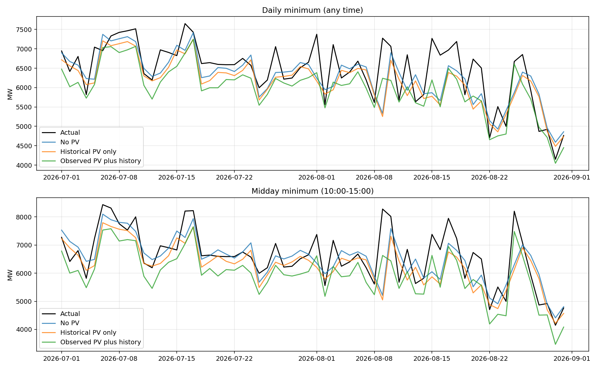

All variants use the same 990 training days before April 2026, same five validation windows and same Ridge alpha=10. No test-driven tuning. Original code, data and results are preserved on codex/current-results-snapshot. Main matches origin/main. This experiment belongs to codex/pv-model-experiment.
Observed PV is an explanatory scenario, not an operational forecast: actual same-day PV is unknown in advance. Historical PV uses only lag-1 and lag-7 measurements. All variants still use observed weather as in the original experiment. Previously inspected test periods are exploratory.
| Variant | No PV | Historical PV only | Observed PV plus history | |
|---|---|---|---|---|
| Target | Period | |||
| Daily minimum (any time) | Fixed-date CV | 433.27 | 429.99 | 304.85 |
| April-June | 301.04 | 314.91 | 321.07 | |
| July | 264.21 | 308.20 | 448.78 | |
| August | 602.46 | 614.19 | 480.63 | |
| July-August | 433.34 | 461.20 | 464.70 | |
| Midday minimum (10:00-15:00) | Fixed-date CV | 606.40 | 576.43 | 344.39 |
| April-June | 433.63 | 485.08 | 450.31 | |
| July | 317.28 | 349.58 | 605.27 | |
| August | 710.78 | 736.20 | 676.86 | |
| July-August | 514.03 | 542.89 | 641.06 |
Observed PV lowers August errors, but July deteriorates and July-August aggregate errors increase. Historical-only PV also fails to improve these tests. Retain this as a comparison experiment, not a demonstrated overall improvement.

Join AEMO NSW1 MEASUREMENT rooftop PV POWER to interval start by subtracting 30 minutes from INTERVAL_DATETIME. Keep only the owning source month because some archives contain extra next-month days. Do not combine MEASUREMENT and SATELLITE values. Missing source records/power remain blank, no interpolation or outlier removal. Incomplete daily summaries remain blank and are handled by fold-fitted median imputation. Lags reset across the 2024 gap. Non-PV input columns are unchanged.
Rows: 55,536; missing PV rows: 6; incomplete PV days: 3. Source hashes, quality indicators and month ownership are retained under data/pv.
Historical: daily mean, daily maximum and midday mean, each lagged one and seven days. Observed scenario additionally includes current daily mean, maximum, midday mean and the change in midday mean since yesterday. Features were specified before running this comparison.